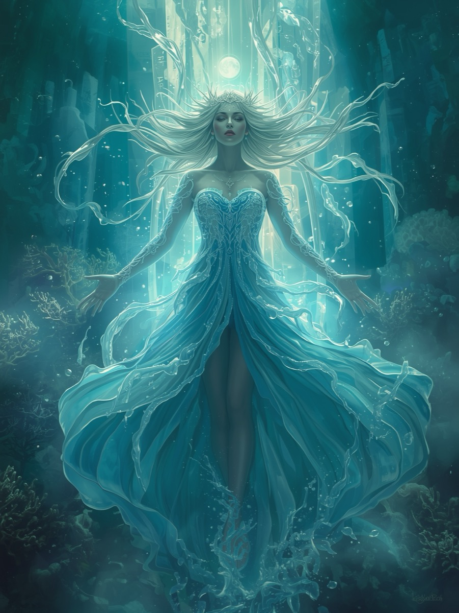
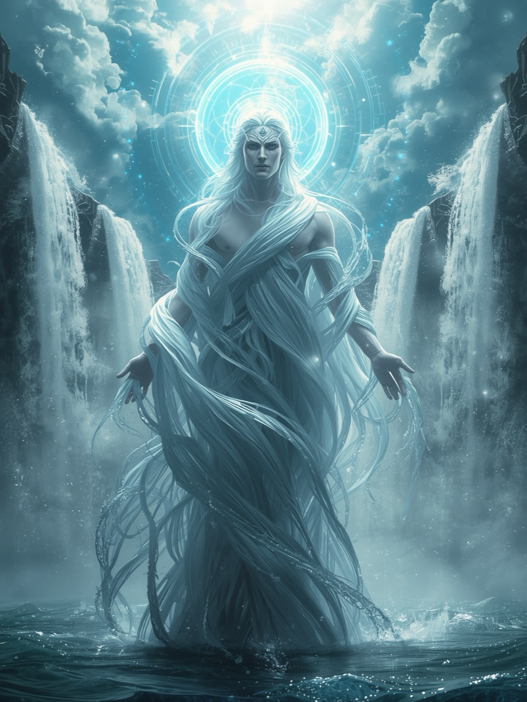

The Current of Surrender
Enter the realm where water and air intertwine, where emotion becomes thought and thought becomes creation.
Choose your archetype and surrender to the divine current that flows through all existence.
Remember that flow is the language of the divine, and surrender is the gateway to infinite wisdom.
Within the Chalice of Flow, two divine archetypes await your soul's choosing. Each embodies the sacred frequency of surrender, yet expresses it through different currents of being. Lyrielle whispers as the voice beneath the waves that dissolves all resistance, while Thalor stands as the keeper of the endless current that guides wisdom into motion.

